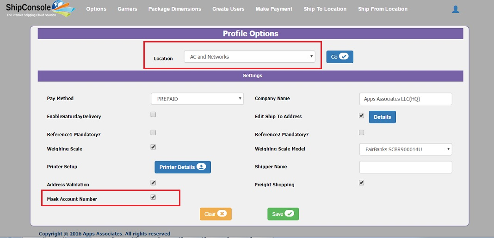
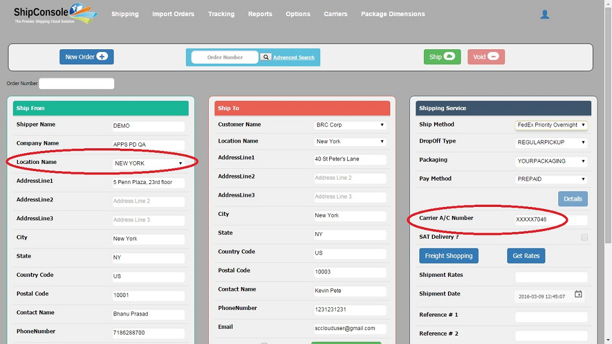
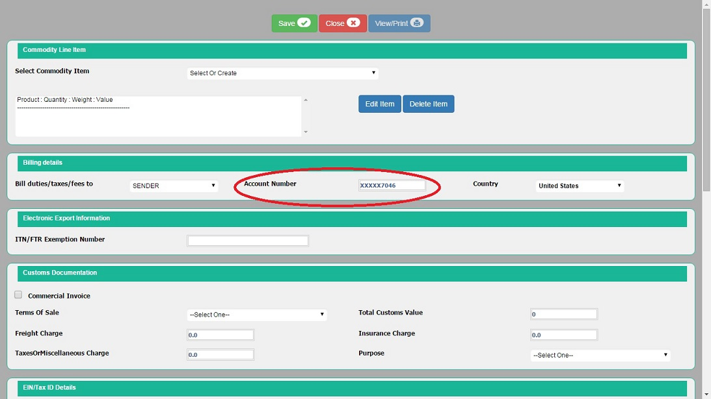

Options allow a Client Admin of ShipConsole Cloud to configure and customize the application for individual ship from location. This enables use of different business processes at different locations using ShipConsole. In the Options page, select the Location for which you would like to set the options. The various options are described below. For examples of each field, please zoom into the figure 4.1 below

Figure 4.1
Profile Options that are specific to the selected Ship From Location :
I. Pay Method : Default value of the Carrier Pay Method field in shipments page of ShipConsole. Select the Pay Method that is most frequently used for shipping, e.g. PREPAID, if most of your shipments are sent as PREPAID.
II. Company Name : Company Name. (Mandatory)
III. Enable Saturday Delivery : Enables Saturday delivery for that location.
IV. Edit Ship To Address :Check this check box to allow editing of the Ship To Address in the Shipment page.
The “Details” button allows control of editing on individual address fields that are displayed in the shipments page. If ‘Edit Ship To Address’ profile option is unchecked, then customer name, address lines, city, state, postal code and country code will be non-editable. Otherwise these fields will be editable.

Figure 4.2
Edit Ship To Address Button in general settings page
If you click on “Details” button then following popup window will be opened where you can select the different editable fields in shipments page and click on “Save” button.

Figure 4.3
Edit Ship To Details screen
Address Lines: Check this check box to edit the Address Lines in the Shipment page.
City: Check this check box to edit the City in the Shipment page.
State: Check this check box to edit the State in the Shipment page.
Postal Code: Check this check box to edit the Postal Code in the Shipment page.
Country Code: Check this check box to edit the Country Code in the Shipment page.
Reference1 Mandatory? : Reference1 in shipments page will be mandatory if this checkbox is checked
Reference2 Mandatory? : Reference2 in shipments page will be mandatory if this checkbox is checked
Account Number Masking : Account Number Masking allows Client to mask account number in shipping page ( i.e. only last 4 digits of the Account Number will be shown).
The masking will be applicable to Pre-configured account numbers only, which has to be done in Ship To Location.
Go to Options page and select any Location which is configured for which you would like to check the mask account number options. In Options Page , Mask Account Number Check-box is available

If Client Admin Checks the Mask Account Number Check-box , then Account Number will be masked (only last 4 digits of account number will be shown) for the particular location while Shipping as shown below.

For FedEx, International Shipping Account number is Shown in International Shipment link which is also masked (only last 4 digits of Account number will be shown) as shown below.

If Client Admin does not check the Check-box , then Account Number will be Shown(it won't be masked) for that particular location while Shipping as shown below.
Profile Options that apply to all Locations:
I. Address Validation: This option enables “Validate Address” button in shipping page which is used for validating Ship To address.
II. Freight Shopping: This option enables “Freight Shopping” button which is used for getting best rates for configured Ship Methods for that location and “Get Rates” button is used for getting rate for the selected Ship Method in shipping page.
Printer and Weighing Scale Set up:
If client wants to provide weighing scale feature and print label feature then admin needs to select the check boxes as show in below (Figure 4.4).

Figure 4.4
Note : If Weighting Scale check-box is Checked and Weighting Scale is Connected to the local machine, on focus weight will be automatically read in Package Details in Shipping Page.
If Weighting Scale is not Checked then weight has to be entered manually in Package Details in Shipping Page.
To Perform Printer Setup, Click on Printer Details it will navigate to Printer Setup Page.
Client admin can Add,Delete Printers in Printer Setup Page.

To Add a Local Printer to Device and Configure the same in ShipConsole:
1. Plug-in the Printer (Ex: ZDesigner GT800 (EPL) Printer via USB) to the Desktop/ Laptop.
2. The following notification will appear on the Desktop

3. On click of this notification, below window will open and automatically install the required software (drivers).

4. After successful install, the below screen will be displayed.

Right Click on Printer and Click on Printer Properties.
5. If any error(s) are observed at Step 4 or 5 and the driver software install is unsuccessful, please make sure that the software is installed successfully before proceeding to next step.
6. Navigate to Control Panel -> All Control Panel Items -> Devices and Printers and check that the Printer is added/ configured automatically as shown in the below screen shot. Please note the Printer name, here the Printer name is ‘ZDesigner GT800 (EPL)’.

7. Login as Admin User and Navigate to Options, select the required Ship From Location and click on Go. After the details are loaded, click on 'Printer Details' button.
8. The Following page will be open, select the required Label format and enter the Printer Name noted at step 6 above and save.

Click on save in this pop - up and click the window.
Ship Exec setup:
For Ship Exec shipping we have to give the shipper name

At the bottom of the page there are “Save” and “Clear” button present. After making changes if you click on “Save” button, all the modified/updated values are saved to database and a success message is displayed at the top right corner of the page as shown in Figure 4.4. If you click on “Clear” button before saving, all the modified values are cleared.